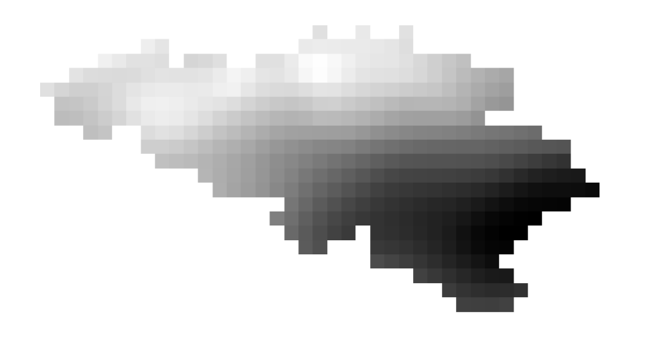

PM10 | Analysis
The term PM10 stands for Particulate Matter. The number 10 indicates microscopic particles (either solid or liquid) suspended in the air with an aerodynamic diameter equal to or less than 10 micrometers (µm). Due to their small size, they are inhalable and can easily penetrate the upper respiratory tract.
PM10 particles are emitted directly into the atmosphere through several Primary Sources:
- Road Traffic: Exhaust emissions (especially from diesel engines) and non-exhaust emissions like brake wear, tire wear, and road surface abrasion.
- Domestic Heating: The combustion of fuels, particularly biomass (wood, pellets) and coal during colder months.
- Industrial Activities: Manufacturing processes, construction sites, power generation, and waste management.
- Natural Sources: Windblown dust, sea salt, pollen, and atmospheric volcanic ash.
The Belgian Context: Belgium faces significant challenges regarding air quality due to its exceptionally dense road network, major industrial hubs (like the Port of Antwerp), and a high susceptibility to transboundary pollution coming from the neighboring industrial regions of Germany and the Netherlands.

 CAMS
CAMS
Text for section 1.

 AVERAGE
AVERAGE
Text for section 2.

 CONCENTRATION MAP
CONCENTRATION MAP
Text for section 3.

 AMAC
AMAC
Text for section 4.